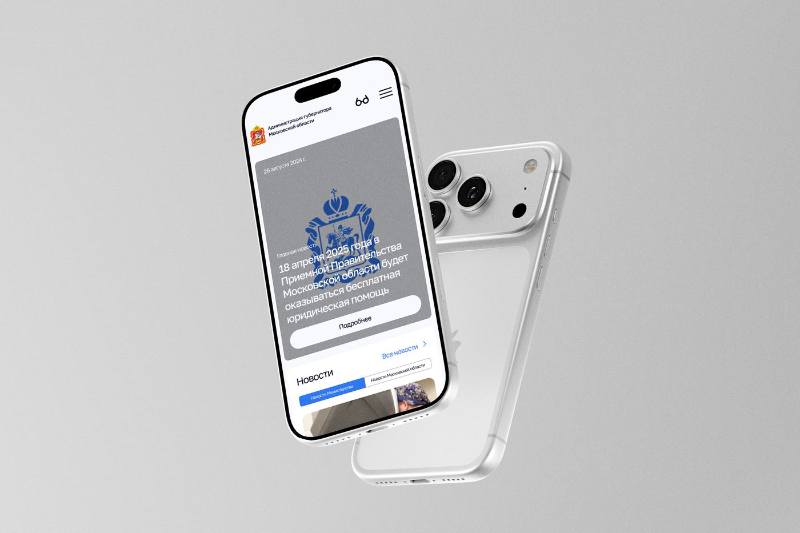
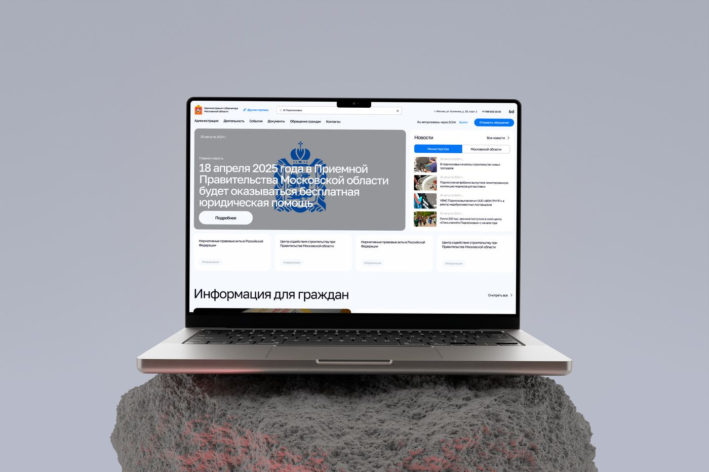
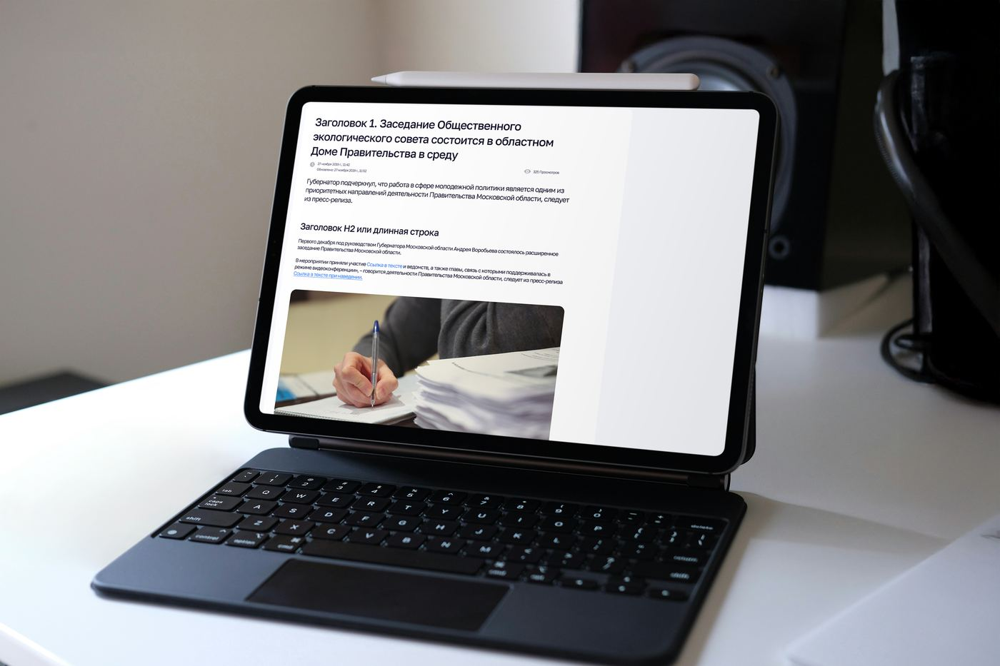
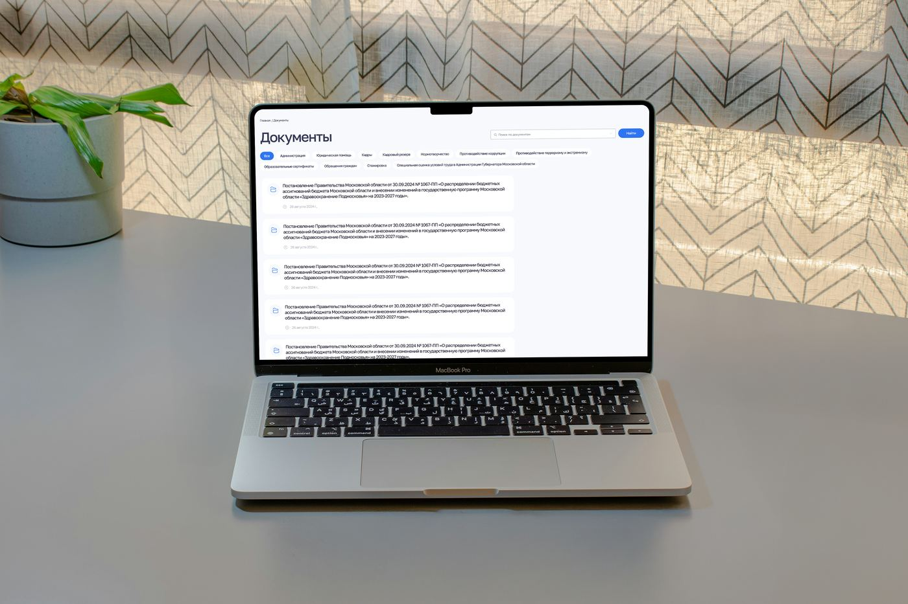
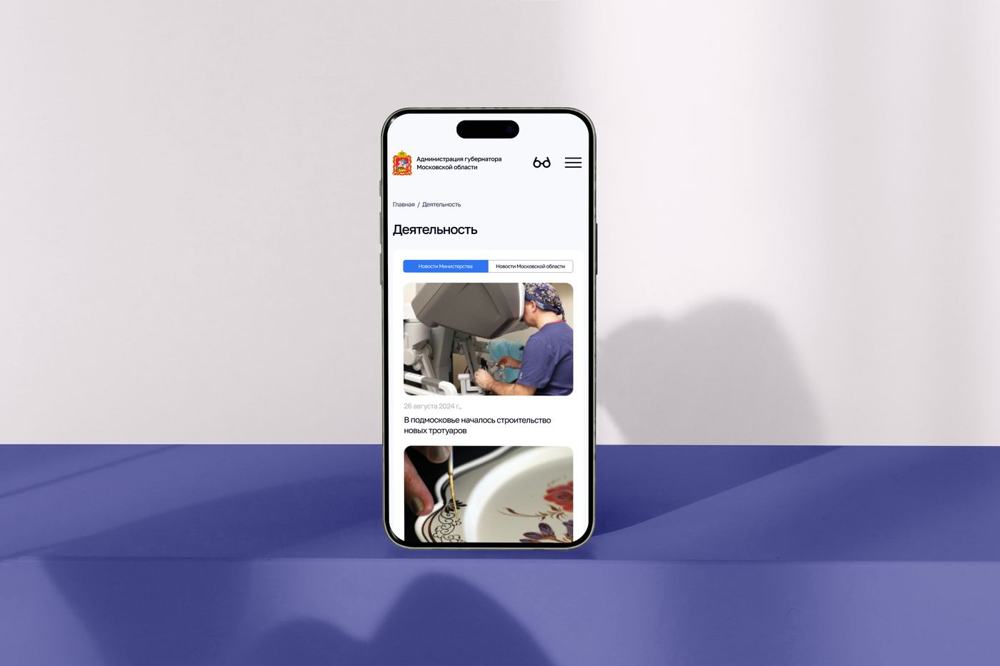
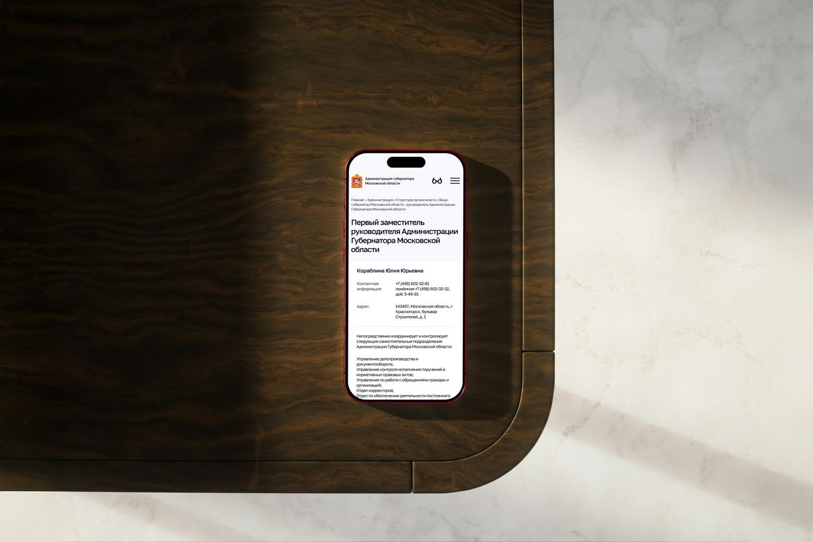

Шаблон для сайтов
органов власти
Единый шаблон и библиотека UI-компонентов для сайтов органов исполнительной власти Московской области — вместо разрозненного и устаревшего дизайна у каждого сайта по отдельности. Одна переиспользуемая система, которая распространяется на все подключённые сайты.
Смотреть оригинальный кейс →Контекст проекта
У органов исполнительной власти Московской области — около 40 сайтов: у министерств, ведомств и подведомственных организаций. Исторически каждый сайт делался отдельно, из-за чего дизайн, навигация и даже качество вёрстки заметно различались от сайта к сайту.
Задача — навести порядок: спроектировать единый шаблон и библиотеку компонентов, на основе которых можно быстро собрать и потом одинаково удобно поддерживать любой сайт органа власти.
Устаревший и разрозненный дизайн
Около 40 сайтов органов власти региона выглядели и работали по-разному: неполная навигация, устаревшие визуальные решения, разный уровень удобства для жителей. Каждое обновление дизайна или структуры приходилось делать заново — отдельно для каждого сайта.
Собрать единый шаблон и библиотеку компонентов
Спроектировать одну систему — шаблон сайта и набор переиспользуемых блоков (новости, документы, услуги, структура, контакты), которую можно развернуть на любом сайте органа власти и обновлять централизованно, не переделывая каждый сайт с нуля.
От аудита к единой системе
- 01
Аудит существующих сайтов
Сравнили около 40 действующих сайтов органов власти, собрали типовые страницы и сценарии — новости, документы, структуру ведомства, услуги, обращения граждан.
- 02
Единый шаблон
Спроектировали общую архитектуру сайта — шапку, меню, подвал и сетку страниц, — которая одинаково хорошо работает для любого органа власти вне зависимости от объёма контента.
- 03
Библиотека компонентов
Собрали переиспользуемые блоки: карточки новостей, документы и НПА, баннеры, календарь событий, структуру и контакты, форму обращений — из них собирается любая страница.
- 04
Доступность и поддержка
Учли версию для слабовидящих и предусмотрели, что изменения в шаблоне и компонентах можно вносить централизованно — сразу на все подключённые сайты.
Как это выглядит






«Один шаблон вместо десятков разных сайтов, который теперь поддерживать и обновлять заметно проще.»— Команда проекта
Что получилось в результате
Собрали единый шаблон и библиотеку компонентов для сайтов органов власти Московской области — вместо устаревшего и разного на каждом сайте дизайна теперь одна система, которая одинаково хорошо работает для любого ведомства.